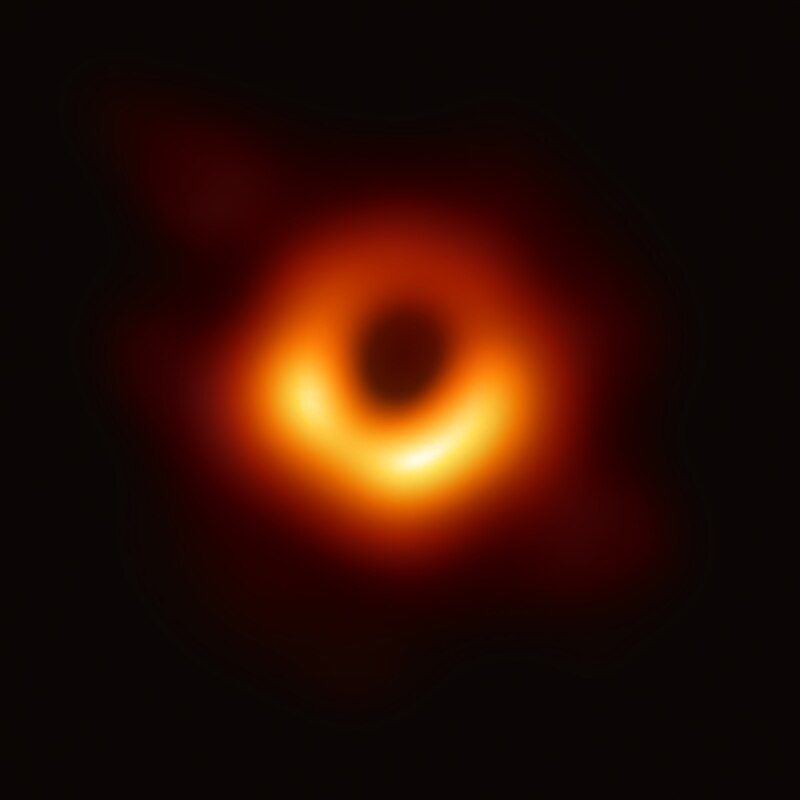

Penrose demonstrated that once an event horizon forms, general relativity without quantum mechanics requires that a singularity will form within. Shortly afterwards, Hawking showed that many cosmological solutions that describe the Big Bang have singularities without scalar fields or other exotic matter. The Kerr solution, the no-hair theorem, and the laws of black hole thermodynamics showed that the physical properties of black holes were simple and comprehensible, making them respectable subjects for research. Conventional black holes are formed by gravitational collapse of heavy objects such as stars, but they can also in theory be formed by other processes.
